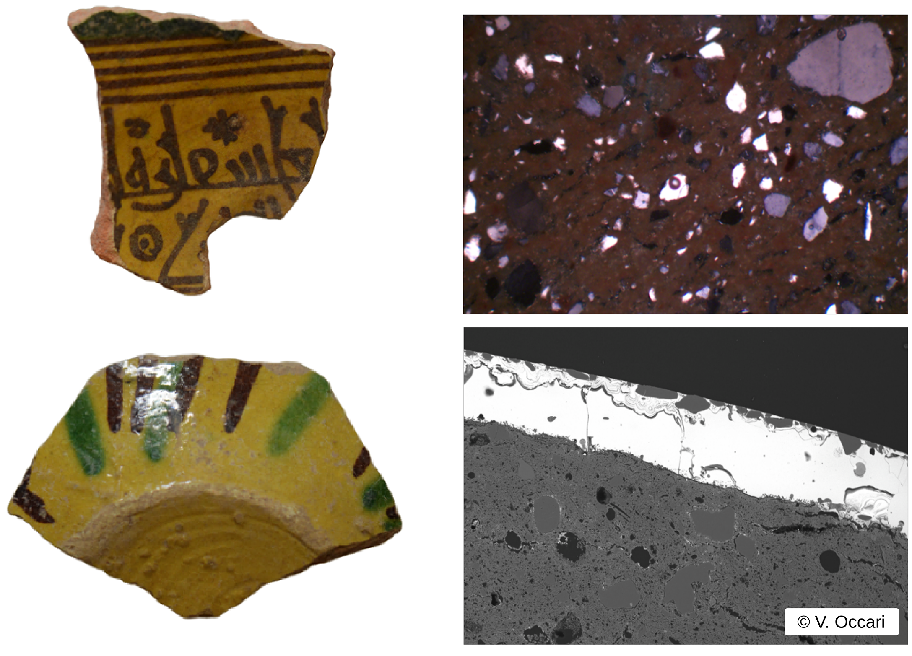

YRA Seminar Series
New Seminar Series
We are happy to announce a new Seminar Series with monthly presentations highlighting exciting research of ECRs!
Each month, we will host an online 1-hour meeting, with about 30 minutes presentations followed by a discussion on the topic. ECRs from around the globe will be invited to present diverse topics, reflecting the multidisciplinary character of archaeological sciences. We aim to have these talks in a relaxed atmosphere, with discussions around a cup of morning coffee, a lunch break, or an afternoon tea depending on the time zone of the participants.
The time slots of each presentation will be accommodated to be the most comfortable for the presenter and listeners from their targeted research area.
The talks will be held online via Zoom. Click here to join the Zoom meeting.
Next presentation: November 11th, at 12:00 pm (UTC)
You can convert to your local time zone with, e.g., timeanddate.com.
The technology of polychrome glazed ceramics in Ifriqiya: new data from the Medjerda Valley
Veronica Occari (University College London, UK)
Co-authors: H. Möller, C. Fenwick, P. Quinn, I.C. Freestone, M. Chaouali, P. von Rummel
Keywords: Ifriqiya; Medieval glazed ceramics; Pottery technology; Petrography; Compositional analyses
Abstract:
Ifriqiya (roughly Tunisia and eastern Algeria) is believed to have played a significant role in the diffusion of ceramic glazed technologies into other regions of the Western Mediterranean. However, due to limited analysis on North African glazed ceramics, its role in technology transfer remains poorly understood. This paper uses petrographic, SEM-EDS and LA-ICP-MS analyses to understand the technology employed in the production of Tunisian ceramics through the study of polychrome glazed ceramics from medieval settlements at the sites of Chimtou (ancient Simitthus) and Bulla Regia, Tunisia, dated to the late ninth-twelfth century. The results provide new insights on workshops practices, on the origin of the ceramics and on regional inland exchange networks.
